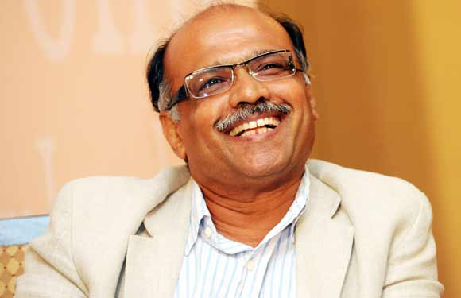

Gopinath was born in Gorur (a remote village in Karnataka's Hassan district) on November 13, 1951.He was the second of eight children. Gopinath's father; a school teacher, believed that schools were systems of regimentation and was resolved to teach Gopinath at home. However, Gopinath was admitted to a Kannada medium school quite late and straight away he joined Standard V. In 1962, Gopinath cleared the admission test and joined Sainik School, Bijapur. The sainik school helped and prepared Gopinath to clear theNDA entrance exams. After 3 years of rigorous training, Gopinath completed education from the NDA. He then went on to graduate from the IMA.
After school, he earned a commission in the Indian Army, earning the rank of Captain. He spent eight years in the army and fought in the 1971 Bangladesh Liberation War.
The army life seemed to somehow tie him down. He took early retirement from Indian Army, at the age of 28. Upon retirement from the armed forces, he established an ecologically sustainable sericulture farm; his innovative methods earned him the Rolex Laureate Award in 1996.Next, he started the Malnad Mobikes (Enfield dealership) and opened a hotel in Hasan.[5]
In 1997 he co-founded Deccan Aviation, a charter helicopter service. In 2003 Gopinath founded Air Deccan, a low cost airline; Air Deccan merged with Kingfisher Airlines in 2007. In 2009 he founded Deccan 360, a freight flight business. In July 2013, Deccan 360 was ordered to wind up by the Karnataka High Court order based on petitions filed by Dubai-based United Aviation Services (UAS) and another by M/s Patel Integrated Logistics (PIL) Pvt. Ltd. — seeking recovery of amounts due to them by winding up the company.
In May 2006 he was knighted with “Chevalier de la Legion d’Honneur” the highest civilian award conferred by the French Government. He has received many awards for Air Deccan.
In 2009 Gopinath unsuccessfully contested as an independent candidate in the Lok Sabha elections
In 2014, He unsuccessfully contested Lok Sabha elections on the ticket of Aam Aadmi Party